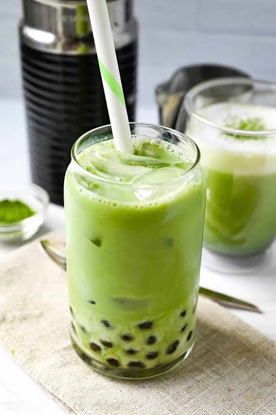

Matcha is a vibrant, finely ground powder made from specially shade-grown green tea leaves that origin ated in China and became the cornerstone of traditional Japanese tea ceremonies. Unlike regular green tea where you steep and discard the leaves, matcha powder is whisked directly into water or milk, meaning you consume the entire tea leaf and its full nutritional value.
Sift the matcha powder into a small bowl to remove lumps.
Add the hot (not boiling) water. Whisk vigorously in a "W" or "M" shape for 30 seconds until frothy.
Stir your chosen sweetener directly into the warm matcha mixture
Fill a tall glass with ice and pour in the milk.
Slowly pour the whisked matcha over the top of the milk to create a beautiful layered effect. Stir before drinking.